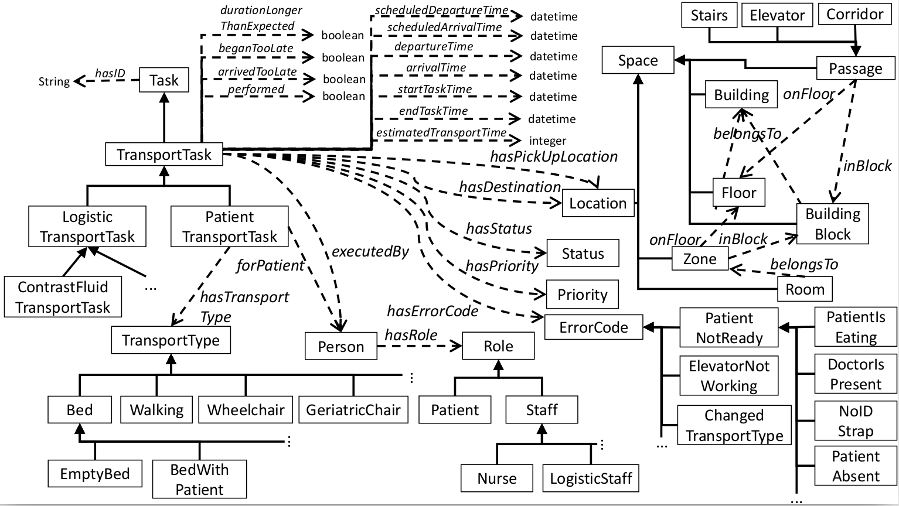

The AORTA Ontology
Ontology Description:
The AORTA ontology describes patient and equipment transports in a hospital setting.The ontology:
The ontology structure and its various concepts and relations is depicted below: {kind=link}
The prevalent concepts of the transport ontology are visualized in the figure above. Two types of transport tasks can be discerned, namely transporting patients or goods. A transport task is associated with its priority, current status and the pick-up location and destination. The staff member that executed the transport is also maintained. When a staff member is unable to execute a task, e.g., because the patient is not ready for transport or the required mode of transport is not available, they associate the reason for this failure with this task by indicating an error code. A lot of timing information about the transportation task is maintained in the ontology, e.g., the departure and arrival time, the scheduled departure \& arrival time and the estimated transport time. To further optimize the scheduler, it is also encoded whether the transport task started too late, arrived too late or took longer than expected. For patient transports, the ontology also models which patient is transported and which mode of transport is used, e.g., a bed or wheelchair.